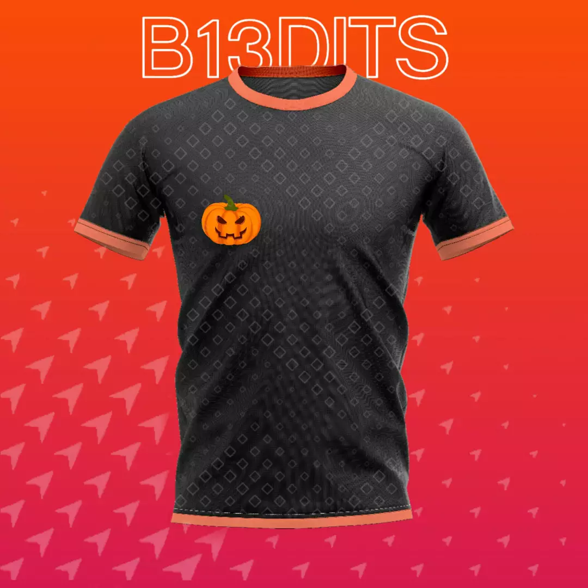
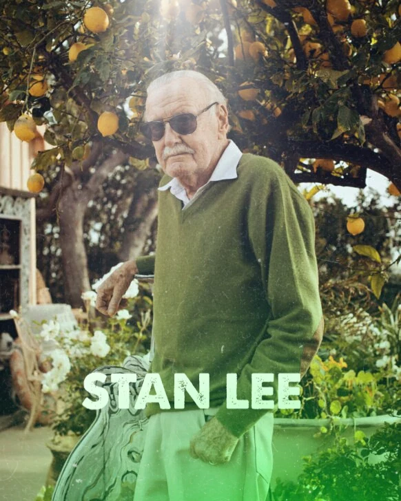
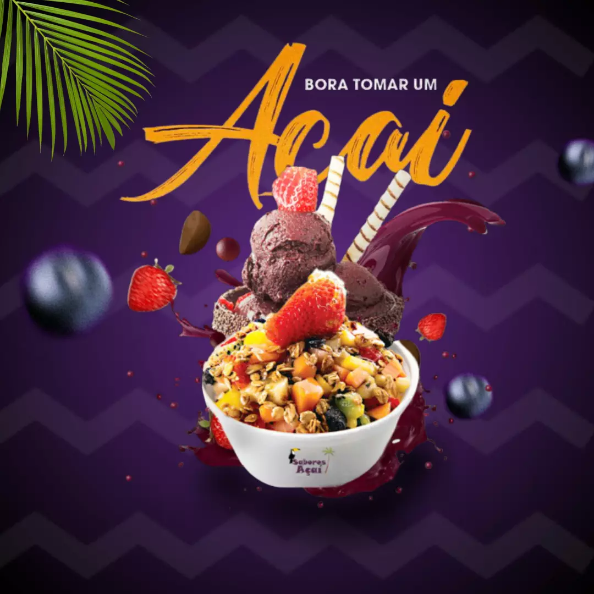

Sobre mim
Olá, eu sou Gabriel Cavalcante
Sou estudante de Ciência da Computação na São Paulo Tech School (SPTech). O que me motivou a criar o Pumpkin - Comunidade para designers ou entusiastas da área -, quando comecei no mundo do designer gráfico não encontrava muitas referências de artes de outras pessoas da área. Na produção de novas artes, meu pensamento criativo ficava limitado, pois eu não tinha consciência do estilo de design que eu gostava de criar.
Essa dificuldade não é isolada, muitos iniciantes enfrentam a falta de referências acessíveis e de orientação para desenvolver seu estilo, o que limita o desenvolvimento de habilidades e a entrada no mercado. Por isso, o Pumpkin reúne em um único espaço online notícias, curiosidades e um quiz que ajuda o usuário a descobrir seu perfil criativo.
Alguns dos meus designs

Camisa de Time B13dits
Arte experimental de uma camisa de time, que fiz uma da minha marca, chamada B13dits.

Homenagem ao Stan Lee
Arte desenvolvida e inspirada em um trabalho da escola, onde me fantasiei do escritor para interpretá-lo e contar a sua história.

Marketing do Tenis Air Jordan
Arte desenvolvida experimentalmente.
Social Media Açai
Arte desenvolvida experimentalmente para meios de estudo de remoção de fundo, texturas e elementos.

Logotipo B13dits
Essa arte foi a versão mais recente da minha marca B13dits, que é representado por uma abóbora e um fogo, devido ao jogo Free Fire.